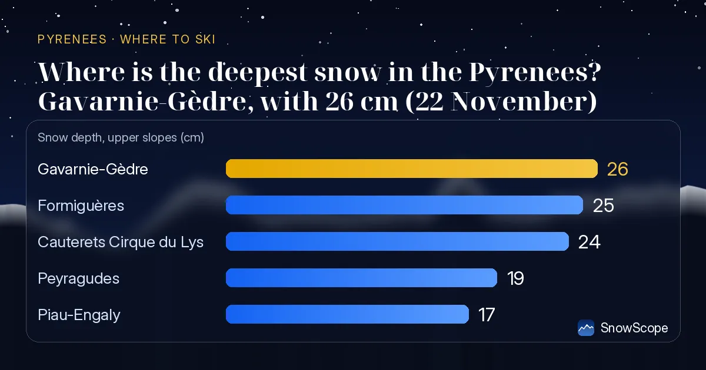

Where is the deepest snow in the Pyrenees? Gavarnie-Gèdre, with 26 cm (22 November)
Gavarnie-Gèdre holds the deepest snow in the Pyrenees on 22 November: 26 cm up high, gained 7 cm in the last 24 hours alone. The snow map shows 44 of 53 resorts now have cover, and white ground spans 3,460 km² across the region, triple the area from two days earlier.
See the live snow forecast for Gavarnie-Gèdre in the SnowScope appSnow depth, powder alerts and the 3D map, free.
The snow surge: how fast it built
On 20 November, only 1,570 km² of the Pyrenees held snow and 39 resorts had cover. By 22 November, the picture changed: 3,460 km² is white and 44 resorts have snow on upper slopes. Gavarnie-Gèdre added 7 cm in the past day, Cauterets Cirque du Lys added 12 cm, and Piau-Engaly picked up 8 cm. This is not unusual snow volume yet, but the speed matters: a rapid build signals changing weather.
Gavarnie-Gèdre sits highest among the three leaders (top at 2,283 m), which helps it hold snow longer. Formiguères and Cauterets Cirque du Lys follow close: both near 25 cm. All three lie on the Atlantic side of the range, where the heaviest falls arrive first.
| Resort | Snow depth | New snow, 72 h | Coming, next days | Top |
|---|---|---|---|---|
| Gavarnie-Gèdre | 26 cm | 10 cm | 14 cm | 2,283 m |
| Formiguères | 25 cm | 4 cm | 7 cm | 2,305 m |
| Cauterets Cirque du Lys | 24 cm | 14 cm | 26 cm | 2,420 m |
| Peyragudes | 19 cm | 6 cm | 9 cm | 2,360 m |
| Piau-Engaly | 17 cm | 13 cm | 14 cm | 2,527 m |

What you will see on the slopes this week
The snow forecast for the next three days brings the first real accumulation window. Cauterets Cirque du Lys is forecast to gain 26 cm by 25 November, reaching 50 cm total. Gavarnie-Gèdre will add 14 cm. Piau-Engaly and Formiguères each gain roughly 7-14 cm. By 25 November, the map forecasts 9,560 km² under snow—nearly three times today's coverage.
Height matters. At Gavarnie-Gèdre, the base at 1,818 m stays bare or wet today (freezing level 2,090–2,190 m). The mid-slopes at 2,050 m hold trace amounts. The upper slopes at 2,283 m keep the best snow. In the next 72 hours, the same pattern holds: snow clings to altitude.
Rain risk on 23 November
On 23 November, the freezing level at Gavarnie-Gèdre rises sharply to 1,990–2,950 m. The top of the lifts (2,283 m) sits inside this range, meaning rain or sleet can fall at the summit. Fresh snow turning wet is heavy and unstable; expect cautious conditions. If you ski that day, go early and descend before the freeze-thaw cycle starts, or stay off steep terrain.
The situation improves on 24–25 November as the freezing level drops again. Snow on 25 November should be drier and lighter.
How this early season compares
At Gavarnie-Gèdre (2,050 m elevation), the ground is bare today while normally 4 cm sits here on 22 November. This is a slow start: only 11 of the past 46 winters were as poor. At Formiguères (2,021 m), 3 cm today beats the median—it lies deeper than the usual 3 cm from 21 of the past 46 years. Cauterets Cirque du Lys (2,072 m) has just 1 cm, well below the typical 7 cm, with only 9 of 46 past winters drier.
In short: Gavarnie-Gèdre is running behind, Formiguères is running ahead, Cauterets is well behind. By 25 November, all three will have more snow, but the gaps will not fully close.
What stations measured on the ground
Real snow depth from three mountain stations on 21 November: Boí (2,537 m) measured 9 cm and saw 3 cm fall in 24 hours. Núria (1,971 m) held 6 cm. Das - Aeròdrom (1,096 m) had 3 cm. These are single-point measurements, not area forecasts, but they confirm that upper elevations are building faster than lower zones.
The SnowScope numbers for resorts estimate the upper slopes; the station numbers are direct measurements at a specific site on that exact date. Both matter for different reasons: use the resort estimates to pick which area to visit, and the station data as a reality check.
What to pack and where to focus
If you are planning a trip to the Pyrenees in the next few days, pick a north-facing slope high up (above 2,100 m). South-facing terrain will melt fastest in the November sun, especially on 23 November under rain risk. Carry a layer for wet snow and check lift status before you leave: snow does not equal open terrain.
Early-season snow is thin and can hide rocks and grass. Stay on marked, groomed pistes until the snowpack thickens. If you are drawn to the backcountry, consult the official avalanche bulletin first: a rapid snow load change is avalanche weather.
Tips for skiers
- Gavarnie-Gèdre leads today, but Cauterets Cirque du Lys will gain the most snow by 25 November—pick based on where you want to be and when.
- Rain is forecast on 23 November above 2,000 m at some resorts. Avoid off-piste terrain that day and return to groomed runs until the snow refreezes.
- North-facing upper slopes hold snow longer than south-facing lower terrain. Plan your route height by height.
- Before touring or skiing off-piste, read the official avalanche bulletin for the Pyrenees.
- Thin early-season snow hides hazards. Probe the snowpack and stay on open pistes until cover is solid.
About these numbers
Resort snow depths are the deepest snow on the resort's upper slopes on the date shown; they are estimates for an area, not a measurement at one point. Forecasts can change. Always read the official avalanche bulletin before going off-piste.
Official avalanche bulletins: Météo-France / Meteocat / AEMET
Cite this report
For research, teaching or the press: the numbers and charts are free to reuse under CC BY 4.0 with this citation.
SnowScope (2026), Where is the deepest snow in the Pyrenees? Gavarnie-Gèdre, with 26 cm (22 November), https://snowscope.app/blog/en/2026/11/pyrenees-gavarnie-gedre-snow-depth-today-22-november-2026.html, accessed 2026-11-22
SnowScope (Atlas Labs). (2026, November 22). Where is the deepest snow in the Pyrenees? Gavarnie-Gèdre, with 26 cm (22 November). SnowScope snow reports. https://snowscope.app/blog/en/2026/11/pyrenees-gavarnie-gedre-snow-depth-today-22-november-2026.html
BibTeX
@misc{snowscope2026pyreneesgavarniegedresno,
author = {{SnowScope (Atlas Labs)}},
title = {Where is the deepest snow in the Pyrenees? Gavarnie-Gèdre, with 26 cm (22 November)},
year = {2026},
month = nov,
howpublished = {\url{https://snowscope.app/blog/en/2026/11/pyrenees-gavarnie-gedre-snow-depth-today-22-november-2026.html}},
note = {Published 2026-11-22 10:48 UTC; accessed 2026-11-22}
}· CC BY 4.0 · Methods, data and tools →
Gavarnie-Gèdre: snow and temperature by height, this winter vs last (tools) →
Follow Gavarnie-Gèdre
Free: a message when fresh snow is coming, and the forecast every morning.
More snow reports

Cauterets offers 25 km of runs for 46 EUR, but our snow history shows that the best chance for cover is the last week of December.

New snow will reach the Pyrenees in two waves over 14 days, with 91 cm forecast at high altitude. The first week brings 49 percent of the total; week 2 stays steady. Data from 19 November.

The Pyrenees will gain up to 63 cm of new snow in the next 14 days, with 70% arriving before 25 November. Data from 18 November.